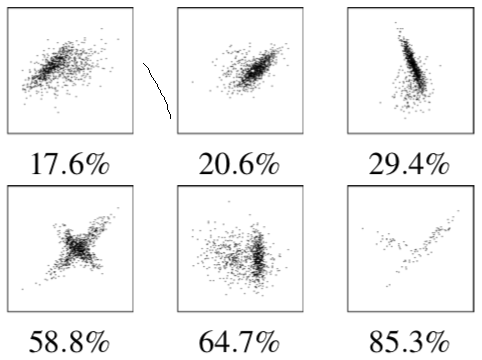

ClustMe: A Visual Quality Measure for Ranking Monochrome Scatterplots based on Cluster Patterns

Venue. CGF (2019)
Authors. Mostafa Abbas, Michael Aupetit, Michael Sedlmair, Halima Bensmail
Abstract. We propose ClustMe, a new visual quality measure to rank monochrome scatterplots based on cluster patterns. ClustMe is based on data collected from a human-subjects study, in which 34 participants judged synthetically generated cluster patterns in 1000 scatterplots. We generated these patterns by carefully varying the free parameters of a simple Gaussian Mixture Model with two components, and asked the participants to count the number of clusters they could see (1 or more than 1). Based on the results, we form ClustMe by selecting the model that best predicts these human judgments among 7 different state-of-the-art merging techniques (Demp). To quantitatively evaluate ClustMe, we conducted a second study, in which 31 human subjects ranked 435 pairs of scatterplots of real and synthetic data in terms of cluster patterns complexity. We use this data to compare ClustMe's performance to 4 other state-of-the-art clustering measures, including the well-known Clumpiness scagnostics. We found that of all measures, ClustMe is in strongest agreement with the human rankings.